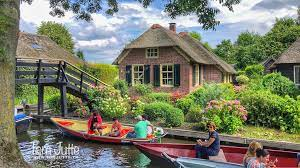
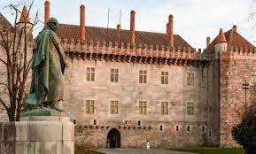
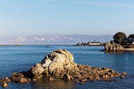

INÍCIO
↑
A Europa é, por convenção, um dos seis continentes do mundo. Compreendendo a península ocidental da Eurásia, a Europa geralmente divide-se da Ásia a leste pela divisória de águas dos montes Urais, o rio Ural, o mar Cáspio, o Cáucaso,[1] e o mar Negro a sudeste.[2] A Europa é limitada pelo oceano Glacial Ártico e outros corpos de água no norte, pelo oceano Atlântico a oeste, pelo mar Mediterrâneo ao sul, e pelo mar Negro e por vias navegáveis interligadas ao sudeste. No entanto, as fronteiras para a Europa, um conceito que remonta à Antiguidade clássica, são um tanto arbitrárias, visto que o termo "Europa" pode referir-se a uma distinção cultural e política ou geográfica.
A Europa é o segundo menor continente em superfície do mundo, cobrindo cerca de 10 180 000 km² ou 2% da superfície da Terra e cerca de 6,8% da área acima do nível do mar. Dos cerca de 50 países da Europa, a Rússia é o maior tanto em área quanto em população (sendo que a Rússia se estende por dois continentes, a Europa e a Ásia) e o Vaticano é o menor. A Europa é o quarto continente mais populoso do mundo, após a Ásia, a África e a(s) América(s), com 740 milhões de habitantes em 2015, cerca de 11% da população mundial naquele ano,[3] isto é, a cada 100 pessoas no mundo neste período, 11 viviam no continente. No entanto, de acordo com a Organização das Nações Unidas (estimativa média), o peso europeu pode cair para cerca de 7% em 2050.[4] Em 1900, por exemplo, a população europeia representava 25% da população mundial (ou seja, a cada 4 habitantes do mundo naquele ano, 1 vivia dentro dos limites do continente).
A Europa, nomeadamente a Grécia Antiga, é considerada o berço da cultura ocidental.[6] Tendo desempenhado um papel preponderante na cena mundial a partir do século XVI, especialmente após o início do colonialismo. Entre os séculos XVI e XX, as nações europeias controlaram em vários momentos as Américas, a maior parte da África, a Oceânia e grande parte da Ásia. Ambas as guerras mundiais foram em grande parte centradas na Europa, sendo considerado como o principal fator para um declínio do domínio da Europa Ocidental na política e economia mundial a partir de meados do século XX, com os Estados Unidos e a União Soviética ganhando maior protagonismo.[7] Durante a Guerra Fria, a Europa estava dividida politicamente ao longo da Cortina de Ferro entre a Organização do Tratado do Atlântico Norte, a oeste, e o Pacto de Varsóvia, a leste. A vontade de evitar outra guerra acelerou o processo de integração europeia e levou à formação do Conselho Europeu e da União Europeia na Europa Ocidental, os quais, desde a queda do Muro de Berlim e do fim da União Soviética em 1991, têm vindo a expandir-se para o leste. A moeda da maior parte dos países da União Europeia, o euro, é mais comumente usada por europeus; O Acordo de Schengen aboliu controles de imigração fortes nas fronteiras de países membros da União Europeia. O hino à Alegria é o hino do Conselho Europeu e da União Europeia.
Considerando as muitas possibilidades turísticas na Europa, na seção lugares, selecionamos alguns lugares turísticos que você poderá desfrutar.
Aproveite sem moderação!
LUGARES
↑
Muitas cidades europeias são destinos dignos de lista de desejos, e por boas razões. Mas as pequenas cidades do continente também são um sonho, com sua bela arquitetura, cultura e história – só que com menos multidões para compartilhar.
Seguem abaixo algumas das mais belas aldeias da Europa, desde humildes colônias de pescadores a arranha-céus nas montanhas.
Giethoorn, Holanda

Eles chamam isso de resposta holandesa a Veneza, mas Giehoorn não tem uma coisa importante que a cidade italiana tem em abundância: excesso de turismo. Como em Veneza, a vida gira em torno da água, aqui não há carros no centro, então a única maneira de se locomover é a pé ou na água.
Faça um passeio de barco até as casas de palha nas ilhas gramadas. Está com fome? Pare no restaurante com estrela Michelin Hollands-Venetië.
Guimarães, Portugal

Guimarães é importante para a história de Portugal – foi nomeada a primeira capital do país no século XII, e o seu núcleo medieval permanece intacto, repleto de conventos, grandes palácios antigos e um castelo em ruínas no topo de uma rocha.
Como em todo o lado em Portugal, as pastelarias locais fazem pastel de nata, mas aqui não pode deixar de provar a especialidade local: a torta di Guimarães – um bolo recheado de abóbora e amêndoa moída.
Roscoff, França

As cidades portuárias podem ser sujas. Mas não é assim para o adorável Roscoff, na região da Bretanha, na França, que fez fortuna no comércio marítimo, inclusive exportando suas famosas cebolas rosas para o Reino Unido.
Hoje, é um centro de talassoterapia, que usa a água do mar para tratar condições médicas.Pequenos barcos de pesca navegam no pequeno porto – no maior, de onde saem os barcos para Plymouth, no Reino Unido, eles vão mais longe.